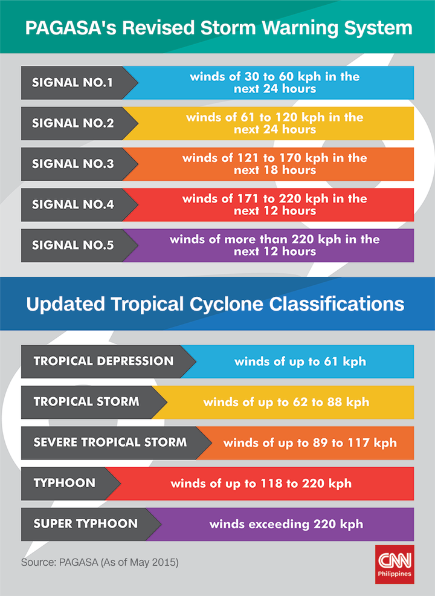

The types of natural disasters which usually strike or occur in Baguio City and the province of Benguet are described on this page in detail.
A tropical cyclone or typhoon is described as a rotating, organized system of clouds and thunderstorms. They form near the surface of a body of water when warm air rises, creating an area of low pressure. The movement of the rising warm air and surrounding air begins to rotate and continues to grow as the storm moves over the water. Once the spinning winds reach a high enough speed, it is categorized as a tropical storm.
These tropical storms originate over tropical or subtropical waters such as the Pacific Ocean or the Atlantic Ocean.
The image below shows the storm signal warning categories:
The dangers and risks which can be encountered are described below:
An earthquake is what happens when two blocks of earth suddenly slip past one another. The surface where they slip is called the fault or fault plane. The location below the earth's surface where the earthquake starts is called the hypocenter, and the location directly above it on the surface of the earth is called the epicenter.
Sometimes and earthquake has foreshocks. These are smaller earthquakes that happen in the same place as the larger earthquake that follows. Scientists can't tell that an earthquake is a foreshock until the larger earthquake happens. The largest, main earthquake is called the mainshock. Mainshocks always have aftershocks that follow which are smaller earthquakes that occur afterwards in the same place as the mainshock. Depending on the size of the Mainshock, aftershocks can continue for weeks, months, and even years.
Earthquakes are measured in magnitude by most scientists through the use of a seismograph and the Richter Scale.
The dangers and risks which can be encountered are described below:
A landslide is the movement of a mass of rock, debris, or earth down a slope. Debris and mud flows are rivers of rock, earth, and other debris saturated with water. They develop when water rapidly accumulates in the ground, during heavy rainfall changing the earth into a flowing river of mud. They can flow rapidly, striking with little to no warning at avalanche speeds. They also can travel serveral kilometers from their source, growing in size as they pick up trees, boulders, cars, and other materials.
Flooding is a natural event or occurence where a piece of land or area that is usually dry, suddenly gets submerged under water. Some floods can occur suddenly and recede quickly. Others take days or even months to build and discharge.
When floods happen in an area where people live, the water carries along objects like houses, bridges, cars, furniture, and even people. Floods occur at irregular intervals and vary in size, duration, and the affected area.